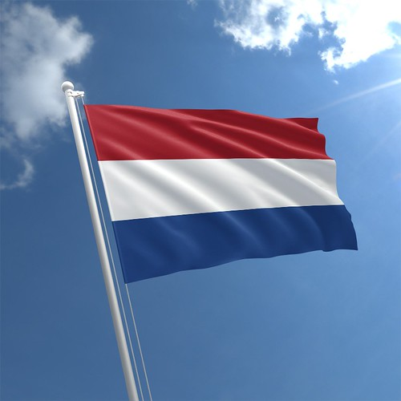

EN ESTE ESPACIO HABLAREMOS SOBRE EL PAIS DE HOLANDA.

Es una región histórica y cultural situada en la costa occidental de los
Países Bajos. Desde 1840, está dividida en dos provincias, Holanda
Septentrional (Holanda del Norte) y Holanda Meridional (Holanda del
Sur).
Antiguamente, el condado de Holanda fue miembro principal de las
Provincias Unidas (1581-1795). Debido a su importancia histórica en la
región, el topónimo «Holanda» se utiliza tradicionalmente como pars pro
toto o sinécdoque para referirse al Estado soberano, y la denominación
oficial de este es la de Países Bajos. Sin embargo, durante el reinado
de Luis I Bonaparte, el Estado llevó el nombre de Reino de Holanda
(1806-1810). Lo mismo ocurre con el idioma, el neerlandés, que es
conocido tradicionalmente, por extensión, como «holandés» (aunque en
realidad el holandés es un dialecto del neerlandés). Lo mismo ocurre en
el caso del gentilicio, que es neerlandés/a, aunque también se usa
«holandés/a».
A partir de 2020, bajo la supervisión del Ministerio de Asuntos
Exteriores, la marca «Holanda» desapareció y el Estado comenzó a darse a
conocer como «Países Bajos» de este pais. El nombre «Netherlands»
(«NL»), en inglés, se convirtió en el protagonista del nuevo logotipo
que sustituyó al toponímico «Holland», usado hasta 2019. Las embajadas y
consulados siempre han utilizado el nombre oficial «Países Bajos»,
debido a que Holanda del Norte y del Sur son solo dos de las doce
provincias nacionales. La Oficina Nacional de Turismo, que se promociona
hasta ahora como Holland, analizará cómo adaptar el nuevo emblema,
vigente a partir del 1 de enero de 2020.
CULTURA
Holanda tiende a estar asociada con una imagen en particular. La imagen
estereotipada de Holanda es una amalgama artificial de tulipanes, molinos
de viento, zuecos, queso y el vestido tradicional (klederdracht). Como es
el caso con muchos estereotipos, esto está lejos de la verdad y la
realidad de la vida en Holanda. Esto, en parte, se explica por la
explotación de los estereotipos en promociones de Holanda y los Países
Bajos. De hecho, solo en algunos de los pueblos más tradicionales, el
traje tradicional y los zuecos son utilizados por los habitantes.
IDIOMAS
El idioma predominante en Holanda es el neerlandés. Los holandeses
generalmente se refieren al neerlandés como «holandés», en lugar del
término estándar. Los habitantes de Bélgica y de las demás provincias de
los Países Bajos se refieren con «holandés» al dialecto del neerlandés
hablado en la región. El neerlandés estándar se basó en el dialecto de la
provincia de Holanda, que incorpora muchos rasgos derivados de las lenguas
habladas en el ducado de Brabante y en el condado de Flandes. Una fuerte
variación dialectal existe aún hoy en los Países Bajos. Hoy en día,
Holanda es la región en la que los dialectos originales del neerlandés son
menos usados, en muchas áreas reemplazados por el dialecto estándar. El
Randstad es la mayor fuente de influencia en la evolución de la lengua
estándar, con la excepción del neerlandés hablado en Bélgica.
NUEVA HOLANDA
La provincia de Holanda dio nombre a una serie de asentamientos coloniales
y regiones descubiertas que fueron llamados Nieuw Holland o Nueva Holanda.
La más extensa de ellas fue la isla de Australia. La denominación «Nueva
Holanda» fue utilizada primero en Australia en 1644 por el marino holandés
Abel Tasman, que le puso el nombre latino de Nova Hollandia, y se mantuvo
en uso durante 190 años. En el mismo viaje, llamó a Nueva Zelanda de esa
manera en honor a la provincia holandesa de Zelanda. En los Países Bajos,
«Nueva Holanda» sería el nombre usual de Australia hasta finales del siglo
XIX.